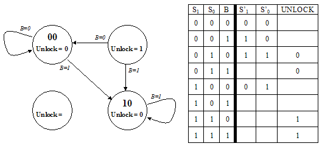
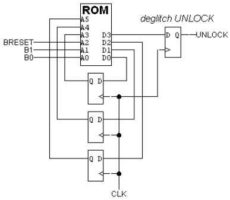
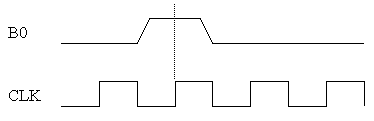
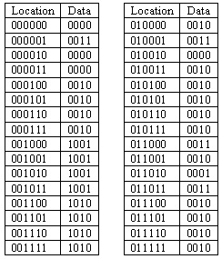
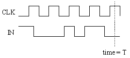
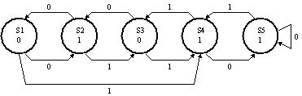

Finite State Machines
Problem 1.
The ACME Company has recently received an order from a Mr. Wiley
E. Coyote for their all-digital Perfectly Perplexing Padlock. The P3
has two buttons ("0" and "1") that when pressed cause the FSM
controlling the lock to advance to a new state. In addition to
advancing the FSM, each button press is encoded on the B signal (B=0
for button "0", B=1 for button "1"). The padlock unlocks when the FSM
sets the UNLOCK output signal to 1, which it does whenever the last N
button presses correspond to the unique N-digit combination.
-
 Unfortunately the design notes for the P3 are incomplete. Using the
specification above and clues gleaned from the partially completed
diagrams below fill in the information that is missing from the state
transition diagram with its accompanying truth table. When done
Unfortunately the design notes for the P3 are incomplete. Using the
specification above and clues gleaned from the partially completed
diagrams below fill in the information that is missing from the state
transition diagram with its accompanying truth table. When done
- each state in the transition diagram should be assigned a 2-bit
state name S1S0 (note that in this design the state name is not
derived from the combination that opens the lock),
- the arcs leaving each state should be mutually exclusive and
collectively exhaustive,
- the value for UNLOCK should be specified for each state, and
- the truth table should be completed.

-
What is the combination for the lock?
Problem 2.
Construct a "divisible-by-3" FSM that accepts a binary number
entered one bit at a time, most significant bit first, and indicates
with a light if the number entered so far is divisible by 3.
-
Draw a state transition diagram for your FSM indicating the
initial state and for which states the light should be turned on.
Hint: the FSM has 3 states.
-
Construct a truth table for the FSM logic. Inputs include
the state bits and the next bit of the number; outputs include
the next state bits and the control for the light.
-
Draw a logic schematic for the FSM.
Problem 3.
-
An FSM, M, is constructed by connecting the output of a 3-state
FSM to the inputs of an 9-state FSM. M is then reimplemented using
a state register with the minimum number of bits. What is the
maximum number of bits that may be needed to reimplement M?
-
You connect M N-state FSMs, each have 1 input and 1 output, in
series. What's an upper bound on the number of states in the
resulting FSM?
Problem 4.
Ben Bitdiddle has designed an electronic lock with three buttons:
"reset", "0" and "1". He has provided the following state transition
diagram showing how the lock responds to a sequence of inputs.

The lock makes a transition from its current state to a new state
whenever one of the three buttons is pressed and released. It ignores
its inputs if more than one button is pressed. Pressing "reset"
returns the lock to the state marked "R" in the diagram (arcs showing
the transitions to the reset state have been omitted from the diagram
to make it easier to read). Pressing "0" or "1" will cause the lock
to follow the appropriately labeled transition from its current state.
The lock opens if it reaches the state marked "U".
-
After pressing the "reset" button what is the length of the
shortest sequence of button presses that will open the lock?
-
After pressing the "reset" button what is the length of the
longest sequence of button presses that will cause the lock to open
after the last button in the sequence is pressed but not open any
earlier in the sequence?
-
After much use, the "reset" button breaks. Is it still
possible to open the lock using only the "0" and "1" buttons assuming
you know nothing about the lock's state (except that its locked!) when
you start?
-
Suppose Ben wanted to design a lock that required exactly 10
button presses to open after pressing "reset". Not counting the
"reset" and "unlock" states, what is the minimum number of state
his FSM would need need?
Problem 5.
Stimulated by Tuesday's lecture, you have decided to cover MIT's steep
tuition costs by selling simple digital locks based on the neat
six-state FSM used as an example:

Recall that this design has three buttons labeled "0", "1", and
"Start", and generates an unlock signal U=1 when the user presses
Start followed by the sequence 0,1,1,0.
Unfortunately your partner, Mark Ting, insists that the 6.004
design is way too complex for normal users to understand. After asking
you to help figure out how to make his watch stop beeping ("I never
could figure out how to operate this damned thing"), Mark questions
the need for a Start button. If 0110 is the combination, he argues,
why can't I just walk up and enter 0,1,1,0 and have the lock open?
After some reflection, you conclude that he may have a point.
-
Design a FSM whose inputs are simply "0" and "1" buttons, whose output
is the U (unlock) signal, and which has the property that U=1 if and
only if the last four button presses correspond to the sequence
0,1,1,0. Show the state transition diagram corresponding to your
design. [HINT: 5 states are sufficient].
-
Is it possible that an equivalent FSM might be implemented in fewer
than 5 states? Explain.
-
The flip flops used to hold your FSM state contain random values when
power is first applied to your lock. Does this constrain your
handling of unused states? Explain.
-
In a table (similar to that shown in lecture), give the contents of a
ROM that might be used in an implementation of your design. Completely
specify the ROM contents, including those corresponding to unused
states.
Problem 6.
Ben Bitdiddle has designed an electronic lock with three buttons:
"Breset", "B0" and "B1". He has provided the following circuit
diagram showing how the lock is implemented from a ROM and 3
flip-flops.

The button circuitry converts each button press into a single pulse
guaranteed to be stable the required amount of time before and after
the rising edge of the clock. For example, pressing "B0" once
produces the following waveform:

In answering the questions below, assume that the value of the
UNLOCK output is only a function of the current state.
-
What is the total number of bits in the ROM?
-
The timing specifications for components are:
ROM: tCD=3ns, tPD=11ns
D flip-flop: tCD=2ns, tPD=4ns, tS=3ns, tH=3ns
How long before the rising edge of CLK must the button circuitry
guarantee that the button signals are stable?
-
Assume that all combinations start with pressing the "Breset"
button. Ben wants to program the lock with the longest possible
combination. Not counting the "Breset" button press, what is the
longest combination Ben can achieve?
-
If the lock is programmed not to change state if no buttons are
pressed, what is the next state field of ROM location 48 (i.e., the
location corresponding to A5,A4,A3,A2,A1,A0 = 110000)?
-
The following table shows one possible contents of the first 32
locations of the ROM; assume that all other locations have the value
"0010". The location is listed as A5,A4,A3,A2,A1,A0, the data is listed as
D3,D2,D1,D0.

If the lock is programmed with this ROM data, what happens when
"B0" and "B1" are pressed at the same time? Assume that "Breset" is
not pressed.
-
If the lock is programmed with this ROM data, what is the
shortest combination that opens the lock after "Breset" has been
pressed?
-
Suppose that the "Breset" button breaks while the lock is
locked. Is it still possible to open the lock using a predetermined
sequence of presses of the "B0" and "B1" buttons? Assume you know
nothing about the lock's state (except that it's locked!) when you
start.
Problem 7.
Use the following circuit in answering the questions below.

Each of the edge-triggered D flip-flops has a setup time of tS, a
hold time of tH, a propagation delay of tPD and a contamination delay
of tCD. Assume that IN is stable tS before the rising edge of CLK and
tH after the rising edge of CLK.
-
In order for the circuit shown above to operate correctly what
constraints on tH and tS are necessary? Express them in terms of
tCD, tPD and the clock period.
-
What is the minimum clock period at which this circuit can be
clocked and still be guaranteed to work? Express your answer in terms
of tH, tS, tCD and tPD. Assume that timing constraints that do not
depend on the clock period are met.
-
For just this question suppose there is skew in the CLK signal
such that the rising edge of CLK arrives at the flip-flop labeled F1
1ns before it arrives at the other three flip-flops. Assume that hold
times are not violated. How does this change the minimum clock period
at which the circuit above can be clocked and still be guaranteed to
work?
-
Consider following waveform plot for the circuit above. Assume
that IN is stable tS before the rising edge of CLK and tH after the
rising edge of CLK and that time T is more than tPD after the
preceding rising edge of CLK.

What is the value of OUT at time T?
-
View the circuit above as an FSM with one input and one output.
How many non-equivalent states does it have?
Problem 8.
Consider the following FSM state transition diagram:

Let's see if there is an equivalent state machine with fewer states
by checking to see if any states in the diagram above are equivalent.
Two states are equivalent if (1) they have identical outputs and (2)
for each possible combination of inputs they transition to equivalent
states.
-
Start by filling in a "compatibility table" like the one shown below.
Place an "X" in square (SI,SJ) if SI produces a different output from
SJ.

-
For each non-X square (SI,SJ) write in pairs of states that have to be
equivalent in order for SI and SJ to be equivalent. For example, for
S2 to be equivalent to S5, then S1 (where S2 goes with a "0" input)
has to be equivalent to S5 (where S5 goes with a "0" input).

-
Finally, look at an entry (SI,SJ). If entry is "SM,SN" and if (SM,SN)
has an "X", put an "X" in square (SI,SJ). Repeat until no more
squares can be X'ed out. The remaining squares indicate equivalent
states. Show the final state (no pun intended) of your compatibility
table.
-
Draw the state transition diagram for the simplified FSM.